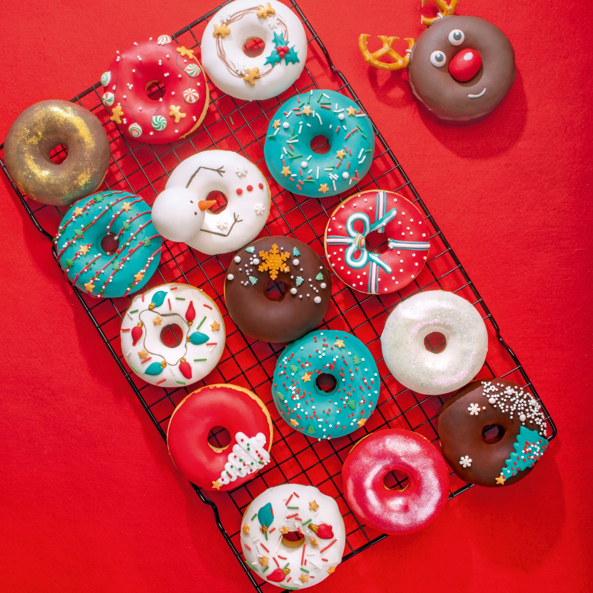

Заказывай пончики в 2 клика!
Не обязательно приходить в заведение, просто сделай заказ и мы привезём свежие пончики к тебе домой!
Умная сортировка по тегам
Добавляй их в корзину и указывай наиболее популярные теги. Это позволит быстро находить любые категории.
-
Собери свой бокс
Время приготвления наших блюд не более 1 часа
-
Акции
Самые вкусные блюда которые можно детям любого возраста

-
На праздник
Чем удивить гостей, чтобы все были сыты за праздничным столом


Описание пончиков
Пончики — это настоящая радость для сладкоежек! Они мягкие, воздушные, с золотистой корочкой, которая при легком нажатии слегка хрустит, открывая доступ к нежной, тающей во рту текстуре. Свежие, только что из печи или фритюра, они источают теплый, сладковатый аромат ванили и сливочного теста, который мгновенно вызывает аппетит. Пончики могут быть покрыты гладкой глянцевой глазурью, которая мягко обволакивает их поверхность, добавляя сладости и мягкого блеска. Шоколадная глазурь — густая и насыщенная, с богатым вкусом какао, в то время как классическая сахарная или ванильная добавляет легкую, приятную сладость. Иногда пончики украшают сахарной пудрой, которая тает на языке, оставляя легкий, воздушный сладкий след. Внутри пончики могут скрывать сюрпризы: густую шоколадную или карамельную начинку, ароматное клубничное варенье или нежный заварной крем. Каждый укус — это сочетание хрустящей корочки, мягкой сердцевины и взрывного вкуса начинки, который делает каждый пончик по-настоящему восхитительным. Неважно, какой вариант вы выберете — с глазурью, начинкой или просто классический обсыпной с сахаром — каждый пончик подарит вам минуты чистого наслаждения и незабываемую сладкую радость!
Поиск
Введите вид пончика, а мы найдем его по тегам!
- С глазурью
- Топинг внутри
- Хрустящие
- Постные
- И другие...